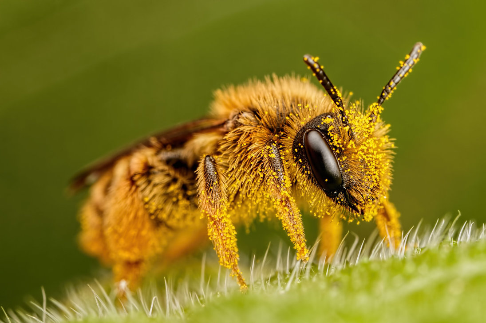
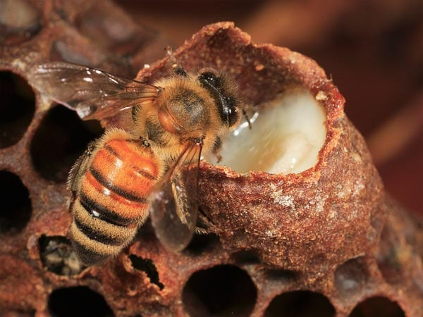

Comment l'oeuf devient une abeille en 21 jours ?
2 paires d’ailes : Pour se déplacer avec précision.
6 petites pattes : dont 2 équipées d’un peigne et d’une brosse pour former des pelotes de pollen, et ramenées à la ruche.
Une longue langue pour aspirer le nectar.
Comment la reconnais-t-on ?
Le pollen
C'est ces petits grains jaunes très fins produits par les plantes. Le pollen contient les cellules mâles des plantes. Le pollen est la base de la nourriture des jeunes larves d’abeille. L’abeille le récolte grâce aux peignes et brosse situés sur ses pattes. Elle le stocke dans les corbeilles à pollen jusqu’à la ruche.
Le nectar

C’est un liquide très sucré présent dans les fleurs. C’est une importante source d’énergie pour les abeilles. L’abeille butine le nectar grâce à sa trompe, puis elle le ramène à la ruche pour le transformer en miel.
La gelée Royale
Elle est particulièrement riche et nourrissante. La Gelée Royale est réservée aux larves de moins de 3 jours. Seule la Reine est nourrie toute sa vie à la Gelée Royale.